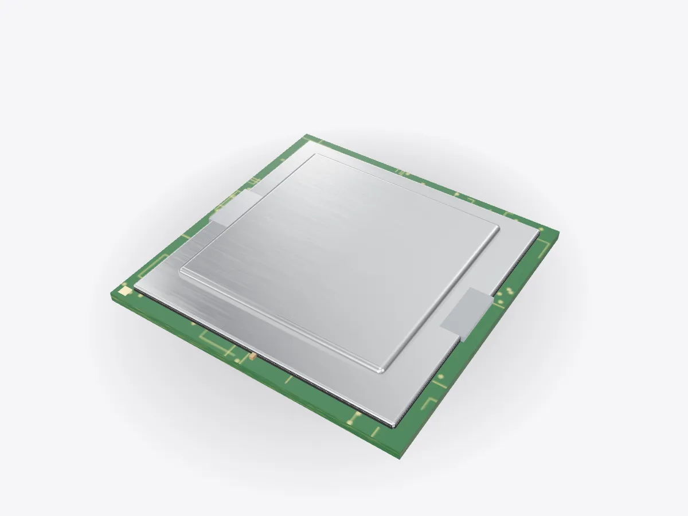

01 / 05
Overview
7 parts, one idea.
Take a desktop CPU apart in 3D: heat spreader, thermal paste, silicon die, substrate and contacts. Then zoom from the package down to a single transistor.
Drag to orbit, pinch or scroll to zoom, tap any part.
How it works · Tech
The square you drop into a motherboard is mostly packaging. The thinking happens in a sliver of silicon in the middle, built from billions of switches.

Scores are saved on this device only.
01 / 05
Overview
Take a desktop CPU apart in 3D: heat spreader, thermal paste, silicon die, substrate and contacts. Then zoom from the package down to a single transistor.
Drag to orbit, pinch or scroll to zoom, tap any part.
02 / 05
Explode
Keep scrolling and every part slides away from the centre, so you can see how they fit together.
03 / 05
Slice
A section plane sweeps through the model as you scroll. Pick an axis and set the depth yourself.
04 / 05
Parts
Pick a part or tap a glowing dot. It lights up and everything else fades back.
05 / 05
Facts
Transistors in the 1971 Intel 4004.
Gordon Moore predicted transistor counts would keep doubling.
Modern desktop processors contain billions of transistors.
Explained
A CPU, or central processing unit, runs the instructions that make up every program. It fetches an instruction from memory, decodes what it means, carries it out and stores the result, billions of times a second. Modern processors have several cores, each able to run its own stream of instructions, plus shared cache memory that keeps recent data close at hand.
What you buy as a CPU is a package. The actual processor is the silicon die in the middle. Everything around it exists to connect the die to the motherboard, power it, and get its heat out. This model is a generic desktop processor without any brand markings.
On top is the integrated heat spreader, a nickel-plated copper lid. The die makes a lot of heat in a small area, and the lid spreads it out so the cooler on top can take it away. Between the die and the lid is a thermal interface material, either paste or a thin layer of solder, which fills tiny gaps that would otherwise hold insulating air.
The die sits on a substrate, a small circuit board with many layers of fine copper wiring. The die has thousands of microscopic connection points, far too close together for a motherboard, so the substrate fans them out to the gold contact pads on the underside. Many of those pads only carry power and ground, because a fast processor can draw large currents at low voltage. The small capacitors on the substrate smooth the supply when the demand suddenly changes.
Inside the die, everything is built from transistors, tiny switches that let current flow or block it under the control of a voltage on their gate. Combine a few and you get logic gates; combine millions and you get adders, caches and whole cores. The Intel 4004 of 1971 had about 2,300 transistors. In 1965 Gordon Moore predicted that the number on a chip would keep doubling at a steady rate, an observation now known as Moore's law, and today's processors have billions.
Modern transistors are FinFETs or newer designs, where the gate wraps around a thin fin of silicon to control the current more tightly. Open Play and use Zoom to go from the package to the die, to a single core, and finally to one transistor.
D3DDD
D3DDD makes them: product cutaways, exploded views, architectural renders and technical drawings.